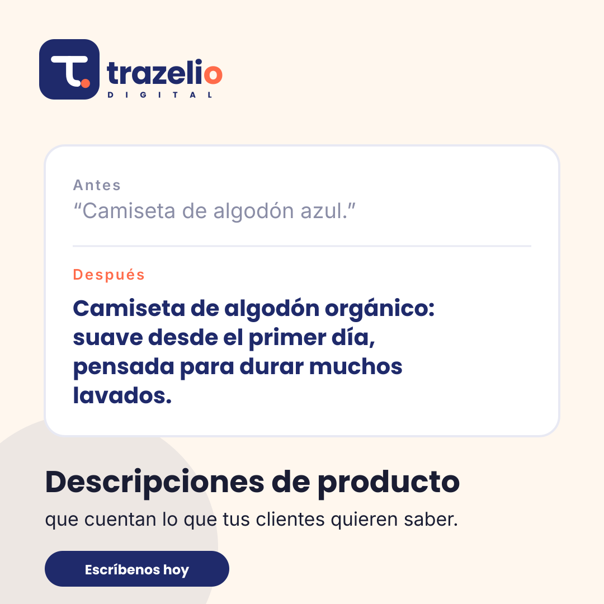
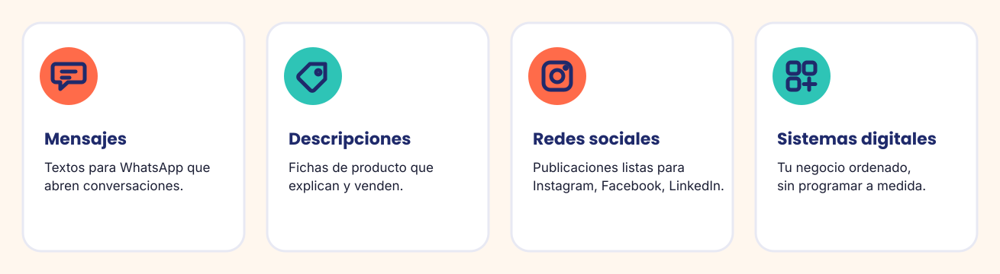

Soluciones prácticas para comunicar mejor y trabajar con más orden.
Cuatro formas de ayudarte en el día a día. Puedes empezar por una necesidad concreta y ampliar cuando lo necesites.
Que cada mensaje diga lo necesario.
Mensajes breves, cercanos y claros para mantener una buena comunicación con tus clientes.
- Recordatorios de citas.
- Avisos de pedidos listos y horarios.
- Respuestas a preguntas frecuentes.
- Mensajes para recuperar el contacto con clientes.
- Textos listos para copiar, pegar y adaptar.
Los mensajes comerciales deben enviarse respetando el consentimiento y las reglas aplicables a cada canal.

Haz que tus fichas expliquen por qué merece la pena elegirte.
Convertimos descripciones básicas en textos útiles, atractivos y fáciles de entender.
- Beneficio principal explicado con claridad.
- Características y detalles concretos.
- Para quién es y qué necesidad cubre.
- Llamada a la acción natural.
- Adaptación al tono de tu negocio.
Tú tienes el negocio. Nosotros te ayudamos a mantenerlo presente.
Contenido para Instagram, Facebook y LinkedIn, con un mensaje claro y un propósito definido.
- Ideas y textos para publicaciones.
- Ganchos que captan la atención.
- Consejos y contenido educativo.
- Presentación de productos y servicios.
- Adaptación del mensaje a cada red.
Los formatos y frecuencias se concretan según tus objetivos y recursos.

Tu negocio, todo más ordenado.
Organizamos procesos cotidianos con herramientas digitales sencillas, adaptadas a tu manera de trabajar y sin programar software a medida.
- Seguimiento de pedidos.
- Información y seguimiento de clientes.
- Organización de tareas y responsables.
- Paneles sencillos para consultar lo importante.
- Soluciones fáciles de adoptar y mantener.
¿No sabes qué servicio necesitas?
Cuéntanos qué te está quitando tiempo y lo vemos contigo.